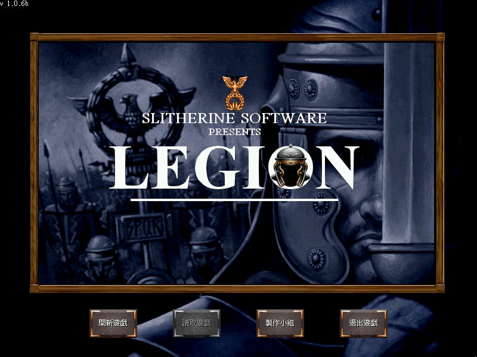
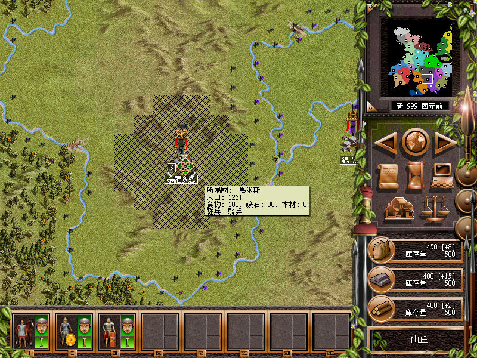

名稱：古文明時代 (Legion，中文／英文版)
簡介：Strategy First 2002年出品的回合策略遊戲，由Paradox代理發行，由光譜中文化並
代理發行。2003年推出「黃金版（Gold）」更新版 [待補]。


保護：繁中版為光碟SecuROM 4.84，英文版／黃金版為光碟，破解碼：
Legion.exe
0F 8E A8 00 00 00 53 56
90 90 90 90 90 90 -- --
C0 5B 74 1B 6A
-- -- EB -- --
備註：繁中版為1.0.6b版，黃金版為1.1.3版
備註：繁中版在XP以上系統執行時，需設定LEGION.EXE為Win9x相容（破解檔不用）。
備註：繁中版不能使用英文版免光碟檔，文字會顯示成亂碼。
檔案：nocd106b_cht.rar = 繁中版1.0.6b免光碟檔